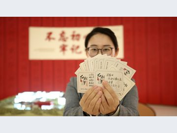
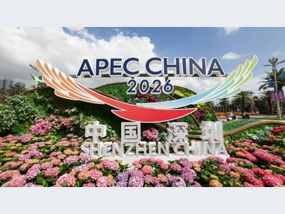
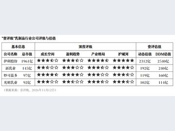

02
8000亿元“金融活水”投向了哪些项目
扩大有效投资，资金从哪儿来？一度困扰许多重大项目的资本金短缺难题，正在得到有力破解。截至10月底，2026年8000亿元新型政策性金融工具全部完成投放…

新华社北京11月24日电（记者任军、吴雨）中国人民银行11月24日发布公告称，为保持银行体系流动性充裕，将于11月25日以固定数量、利率招标…

扩大有效投资，资金从哪儿来？一度困扰许多重大项目的资本金短缺难题，正在得到有力破解。截至10月底，2026年8000亿元新型政策性金融工具全部完成投放…
金融监管总局日前发布的最新监管指标数据显示，截至三季度末，银行业金融机构本外币资产总额首次站上500万亿元台阶，同比增长6.1%。

“如果我们不创新，就会失去这个时代。”11月21日，在第二十一届21世纪金融年会上，中国银行业协会党委委员、副秘书长杨江英出席并发表主旨演讲。

中泰证券发布研究报告称，3Q26银行业净息差1.41%，环比持平，自2Q25以来连续6个季度处于1.40%-1.42%区间。

从威海海岸的新材料实验室，到东营石化产业园的生产车间；从枣庄智能化医用品产线，到烟台储能企业的调试现场——齐鲁大地上…
11月23日，省委常委、市委书记李强，市委副书记、市长姚华明在大连会见中国中车集团有限公司党委书记、董事长孙永才一行。
市第十四次党代会绘制了今后五年大连高质量发展的蓝图，提出了要加快建设更有品质更有温度的现代海洋城市。

生态环境部公布第五批美丽河湖优秀案例名单，辽宁省大洋河（鞍山市段）榜上有名。

11月23日消息，天眼查数据显示，鞍钢股份有限公司发布冷轧厂4#镀锌机组拓品改造项目配套主电室项目-消防工程总承包（PC模式）…

财联社11月23日讯（记者 林坚）在刚过去的周末，证监会密集出台三大政策，涉及两融保证金下调、让利降费以及做市制度的推出等维度，在不少观点看来…

Wind数据显示，本周（11月23日—11月27日）央行公开市场有3795亿元隔夜逆回购到期，另有10000亿元MLF到期，两项合计13795亿元。